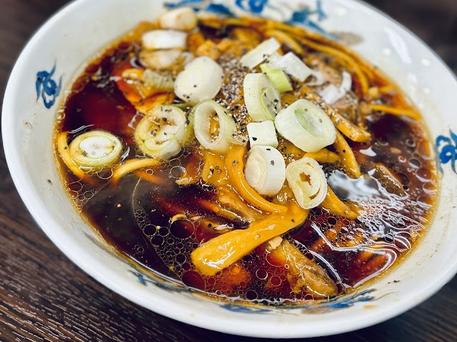
| 営業時間 | 月・火・木・金・土・日 11:00〜20:00 |
|---|---|
| 定休日 | 水曜 |
| 住所 | 富山県富山市太田口通り１丁目１−７ |
| 予約 | 要確認 — ☎ 076-423-3001 ／ 公式サイト |
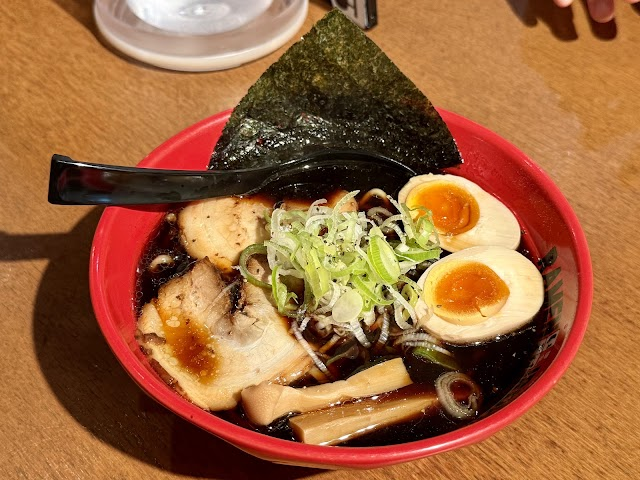
| 営業時間 | 月・火・水・木 11:00〜22:00 ／ 金 11:00〜23:00 ／ 土 10:00〜23:00 ／ 日 10:00〜22:00 |
|---|---|
| 定休日 | なし(要最終確認) |
| 住所 | 富山県富山市新富町１丁目２−３ CiC B1F |
| 予約 | 要確認 — ☎ 076-444-7211 ／ 公式サイト |
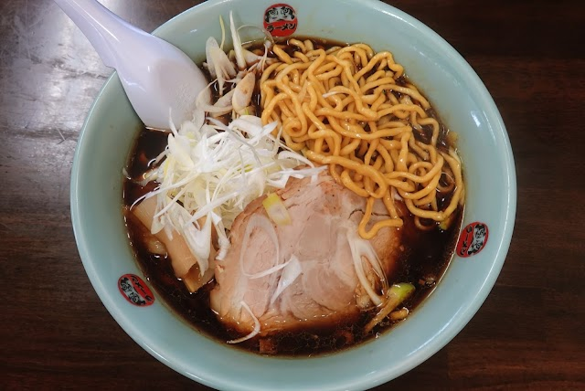
| 営業時間 | 火・水・木・金・土・日 11:00〜21:00 |
|---|---|
| 定休日 | 月曜 |
| 住所 | 富山県富山市北代５３３２ |
| 予約 | 要確認 — ☎ 076-436-3588 ／ 公式サイト |
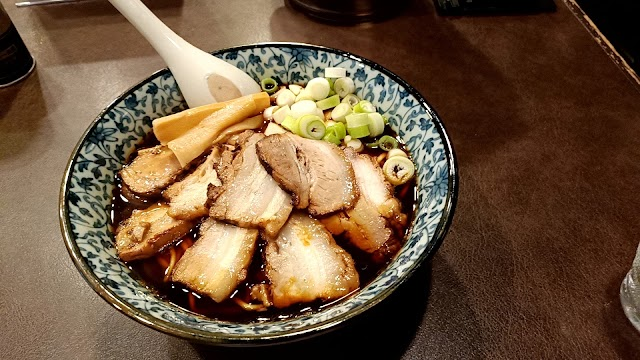
| 営業時間 | 月・火・木・金・土・日 11:30〜14:00 |
|---|---|
| 定休日 | 水曜 |
| 住所 | 富山県富山市内幸町２−１０ |
| 予約 | 要確認 — ☎ 076-441-1124 ／ 公式サイト |
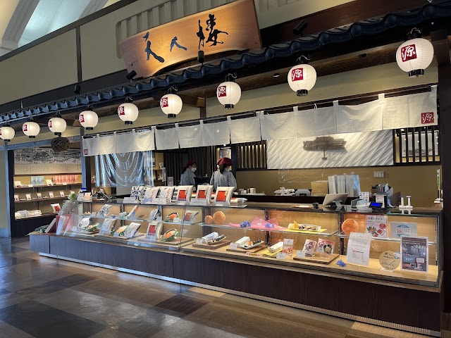
| 営業時間 | 月・火・水・木・金・土・日 9:30〜17:00 |
|---|---|
| 定休日 | なし(要最終確認) |
| 住所 | 富山県富山市南央町３７−６ |
| 予約 | 要確認 — ☎ 076-429-7400 ／ 公式サイト |
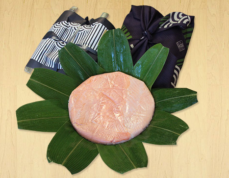
| 営業時間 | 8:00～16:00（売り切れ次第終了） |
|---|---|
| 定休日 | 日曜・月曜（月曜が祝日の場合は翌日） |
| 住所 | 富山県富山市新富町１丁目４−６ |
| 予約 | 要確認 — ☎ 076-432-5324 ／ 公式サイト |
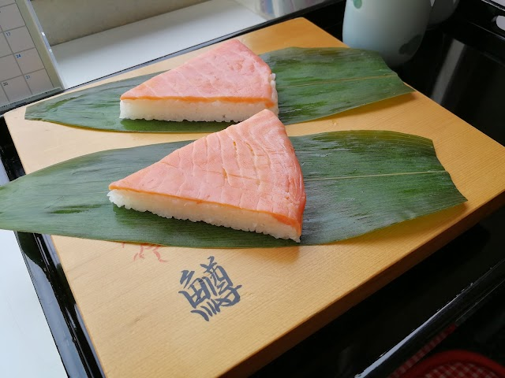
| 営業時間 | 月・水・木・金・土・日 7:00〜18:00 |
|---|---|
| 定休日 | 火曜 |
| 住所 | 富山県富山市市丸の内１丁目２−６ |
| 予約 | 要確認 — ☎ 076-432-5129 ／ 公式サイト |
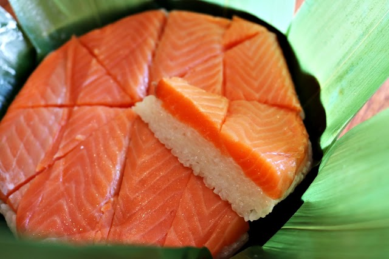
| 営業時間 | 月・火・水・木・金・土・日 8:00〜12:30 |
|---|---|
| 定休日 | なし(要最終確認) |
| 住所 | 富山県富山市小泉町５４ |
| 予約 | 可 — ☎ 076-491-0342 |
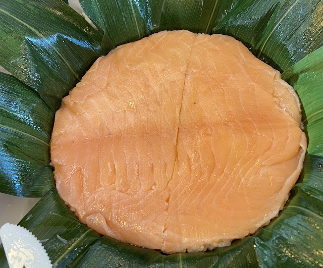
| 営業時間 | 月・火・木・金・土・日 7:00〜18:00 |
|---|---|
| 定休日 | 水曜 |
| 住所 | 富山県富山市市丸の内１丁目１−１３ |
| 予約 | 要確認 — ☎ 076-432-4774 ／ 公式サイト |
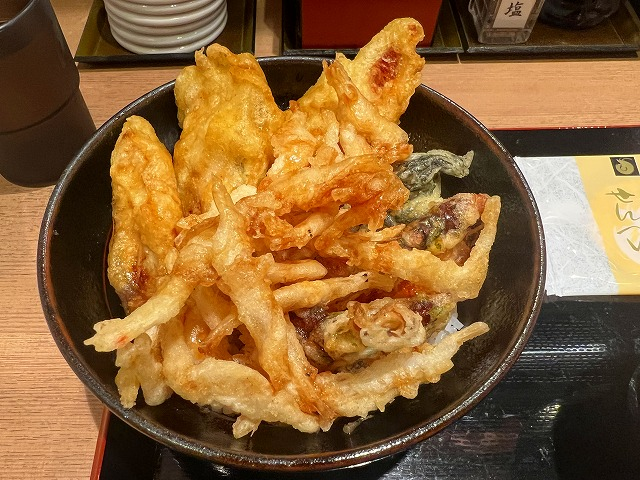
| 営業時間 | 月・火・水・木・金・土・日 11:00〜20:00 |
|---|---|
| 定休日 | なし(要最終確認) |
| 住所 | 富山県富山市明輪町１−２２０ ＪＲ富山駅 ホーム 1 きときと市場とやマルシェ 内 |
| 予約 | 要確認 — ☎ 076-433-0355 |
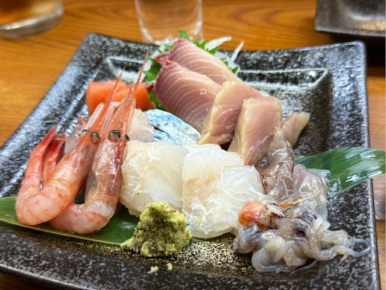
| 営業時間 | 月・火・水・木・金・土 16:00〜23:00 |
|---|---|
| 定休日 | 日曜 |
| 住所 | 富山県富山市桜町２丁目１−１７ |
| 予約 | 可 — ☎ 076-431-4415 ／ 公式サイト |
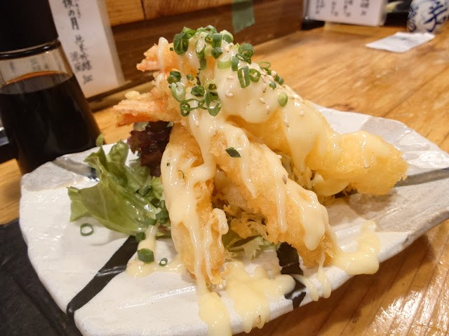
| 営業時間 | 月・火・水・木・金・土・日 17:00〜0:00 |
|---|---|
| 定休日 | なし(要最終確認) |
| 住所 | 富山県富山市新富町２丁目１−３ |
| 予約 | 可 — ☎ 076-482-4064 ／ 公式サイト |
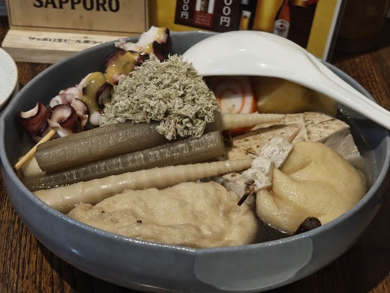
| 営業時間 | 18:00～22:00 |
|---|---|
| 定休日 | 不定休 |
| 住所 | 富山県富山市桜町２丁目１−１ |
| 予約 | 可 |
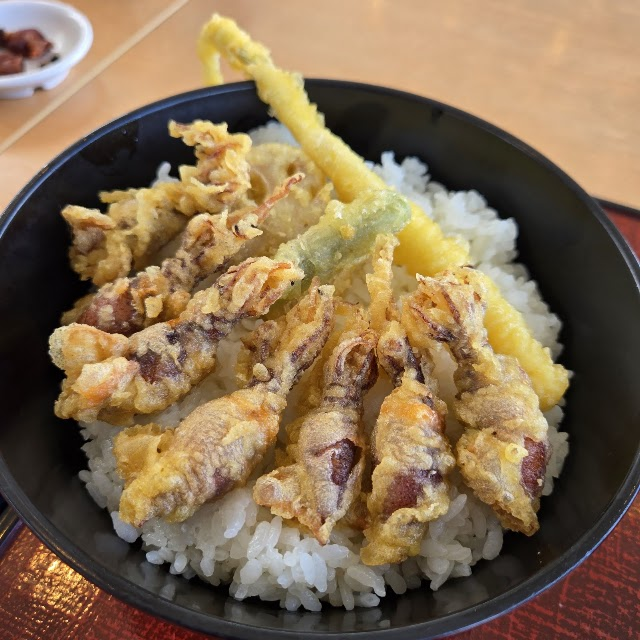
| 営業時間 | 月・水・木・金・土・日 11:00〜18:00 |
|---|---|
| 定休日 | 火曜 |
| 住所 | 富山県滑川市中川原４１０ |
| 予約 | 可 — ☎ 076-476-1370 ／ 公式サイト |
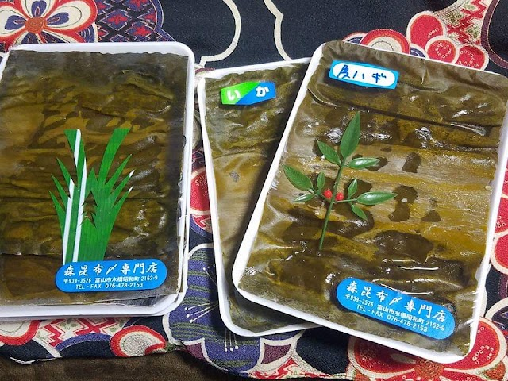
| 営業時間 | 火・木・金・土 9:00〜17:00 ／ 水 9:00〜12:00 |
|---|---|
| 定休日 | 月・日曜 |
| 住所 | 富山県富山市水橋辻ヶ堂２１６２−９ |
| 予約 | 要確認 — ☎ 076-478-2153 ／ 公式サイト |
| 営業時間 | 月・火・木・金・土 10:00〜16:00 |
|---|---|
| 定休日 | 水・日曜 |
| 住所 | 富山県富山市水橋肘崎４８２−８ |
| 予約 | 要確認 — ☎ 076-479-1850 ／ 公式サイト |
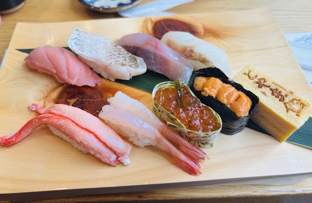
| 営業時間 | 月・火・水・木・金・土・日 11:30〜14:00, 17:00〜22:00 |
|---|---|
| 定休日 | なし(要最終確認) |
| 住所 | 富山県富山市桜町１丁目３−１ ダイワロイネットホテル富山駅前 1F |
| 予約 | 可 — ☎ 076-432-8780 ／ 公式サイト |
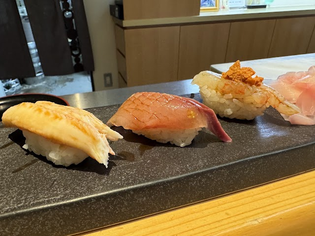
| 営業時間 | 月・火・木・金・土・日 11:30〜14:00, 17:00〜20:30 |
|---|---|
| 定休日 | 水曜 |
| 住所 | 富山県富山市桜町１丁目７−５ 美喜鮨本店 |
| 予約 | 可 — ☎ 076-432-7201 ／ 公式サイト |
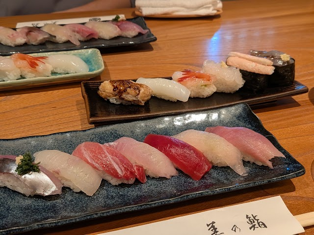
| 営業時間 | 火・水・木・金・土 11:30〜14:00, 17:30〜20:30 |
|---|---|
| 定休日 | 月・日曜 |
| 住所 | 富山県富山市丸の内２丁目３−４ |
| 予約 | 可 — ☎ 076-422-3034 ／ 公式サイト |
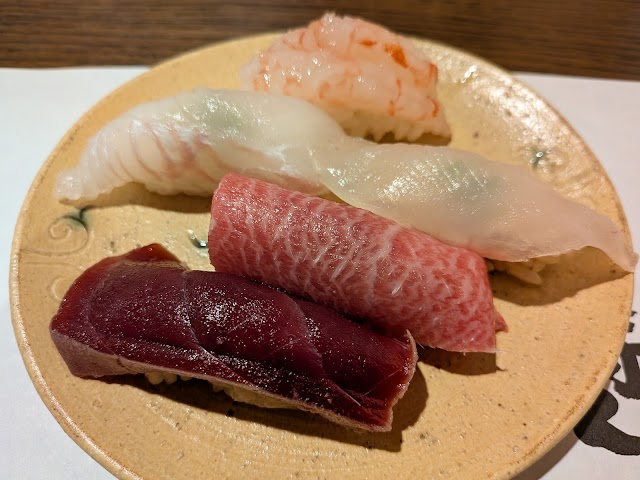
| 営業時間 | 月・火・水・木・金・土 17:30〜23:30 |
|---|---|
| 定休日 | 日曜 |
| 住所 | 富山県富山市総曲輪１丁目６−１１ Ｋｅｌｌｙビル 1F |
| 予約 | 可 — ☎ 076-431-6788 ／ 公式サイト |
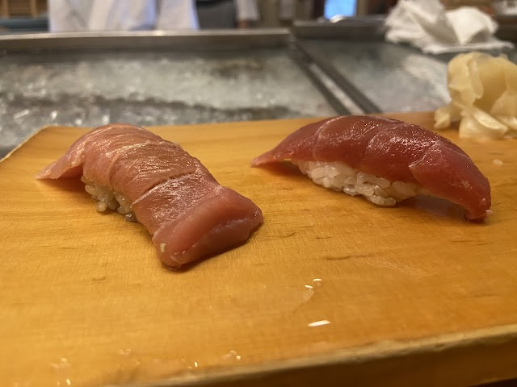
| 営業時間 | 火・水・木・金・土・日 17:00〜23:00 |
|---|---|
| 定休日 | 月曜 |
| 住所 | 富山県富山市北新町１丁目２−３０ |
| 予約 | 可 — ☎ 076-433-5066 ／ 公式サイト |
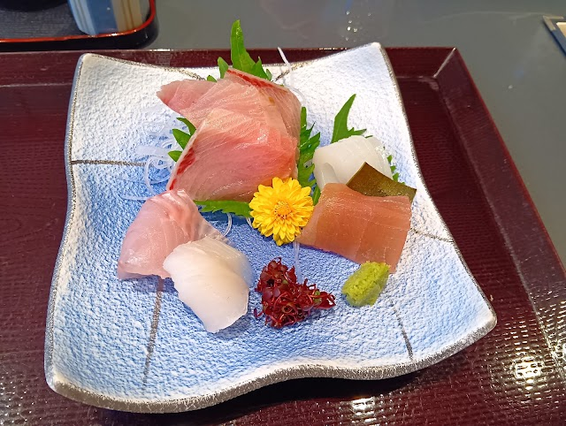
| 営業時間 | 月・火・水・木・金 11:30〜14:00, 17:00〜22:00 ／ 土 17:00〜22:00 |
|---|---|
| 定休日 | 日曜 |
| 住所 | 富山県富山市新富町２丁目４−７ 新富町ビル 2F |
| 予約 | 可 — ☎ 076-439-1988 ／ 公式サイト |
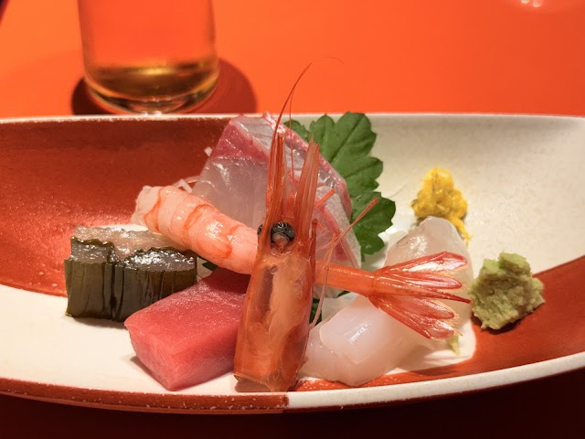
| 営業時間 | 火・水・木・金・土・日 11:30〜14:00, 17:00〜22:00 |
|---|---|
| 定休日 | 月曜 |
| 住所 | 富山県富山市桜町１丁目６−４ |
| 予約 | 可 — ☎ 076-441-4649 ／ 公式サイト |
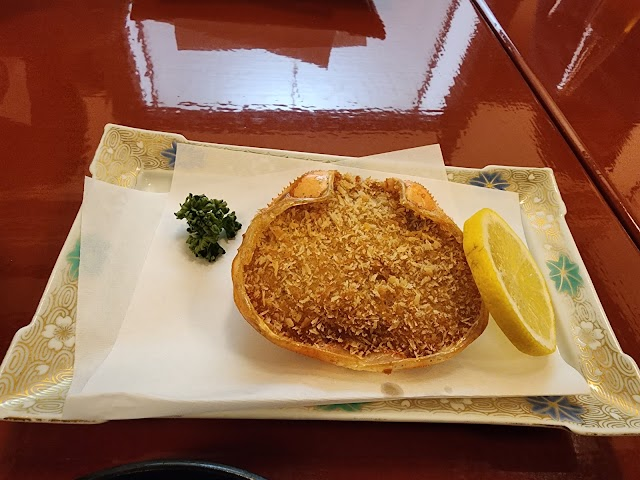
| 営業時間 | 月・火・水・木・金・土・日 11:30〜21:00 |
|---|---|
| 定休日 | なし(要最終確認) |
| 住所 | 富山県富山市岩瀬港町１１６ |
| 予約 | 可 — ☎ 076-438-1188 ／ 公式サイト |
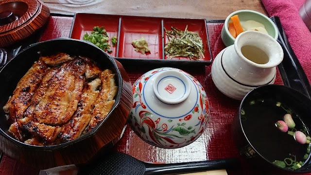
| 営業時間 | 火・水・木・金・土・日 11:30〜14:30, 17:00〜19:30 |
|---|---|
| 定休日 | 月曜 |
| 住所 | 富山県富山市太郎丸本町３丁目１０−１ |
| 予約 | 可 — ☎ 076-492-0047 ／ 公式サイト |
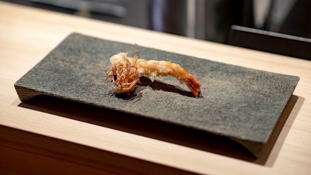
| 営業時間 | 月・火・木・金 12:00〜14:00, 18:30〜22:00 ／ 土・日 12:00〜14:00, 18:00〜21:30 |
|---|---|
| 定休日 | 水曜 |
| 住所 | 富山県富山市清水町７丁目３−６ |
| 予約 | 可 — ☎ 076-461-8155 ／ 公式サイト |
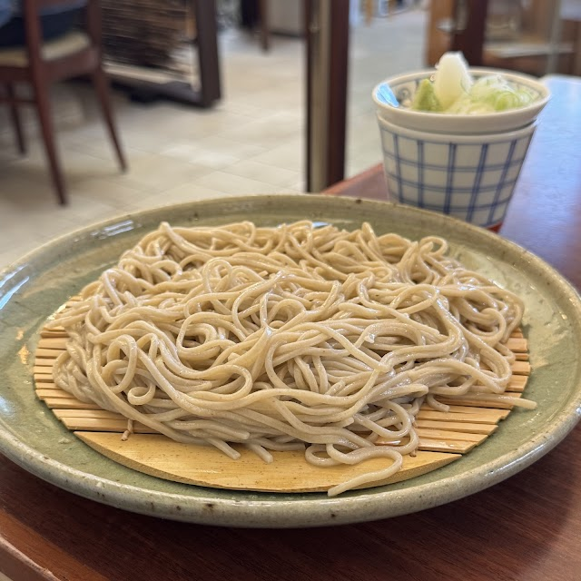
| 営業時間 | 月・火・水・木・金・土・日 11:00〜15:30 |
|---|---|
| 定休日 | なし(要最終確認) |
| 住所 | 富山県富山市神通町２丁目１−３ |
| 予約 | 可 — ☎ 076-432-1505 ／ 公式サイト |
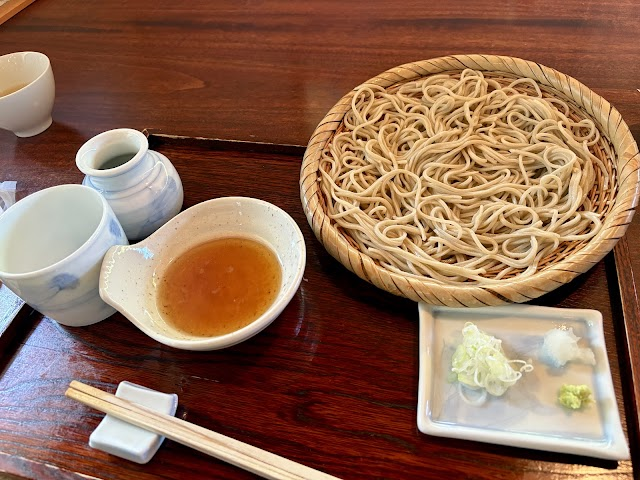
| 営業時間 | 月・火・水・土・日 11:30〜14:30 |
|---|---|
| 定休日 | 木・金曜 |
| 住所 | 富山県富山市黒瀬北町１丁目８−８ 達磨 |
| 予約 | 要確認 — ☎ 076-492-3989 |
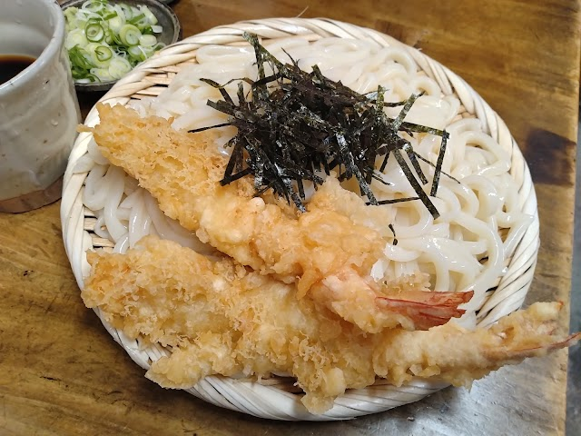
| 営業時間 | 火・水・木・金・土 11:30〜14:00 |
|---|---|
| 定休日 | 月・日曜 |
| 住所 | 富山県富山市新桜町６−２ |
| 予約 | 可 — ☎ 076-441-8496 ／ 公式サイト |
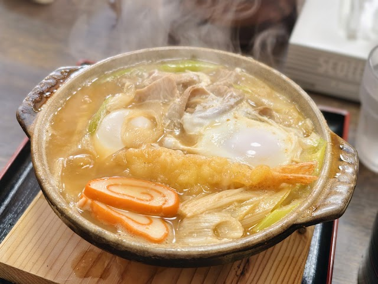
| 営業時間 | 月・水・木・金 11:00〜15:00, 17:00〜22:00 ／ 土・日 11:00〜22:00 |
|---|---|
| 定休日 | 火曜 |
| 住所 | 富山県富山市太郎丸本町１丁目７−６ |
| 予約 | 要確認 — ☎ 076-425-5581 ／ 公式サイト |
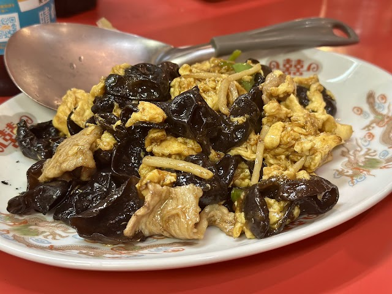
| 営業時間 | 火 0:00〜3:30, 17:00〜3:30 ／ 水・木・日 17:00〜3:30 ／ 金・土 17:00〜4:30 |
|---|---|
| 定休日 | 月曜 |
| 住所 | 富山県富山市桜町１丁目６−１３ |
| 予約 | 可 — ☎ 076-431-2702 |
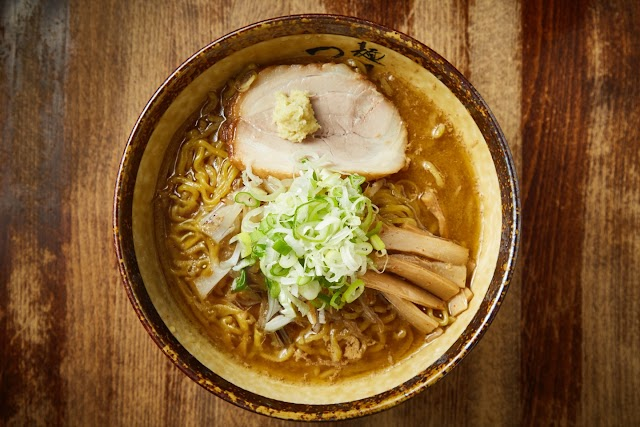
| 営業時間 | 月・火・木・金 11:00〜14:45, 18:00〜21:00 ／ 土・日 11:00〜14:45, 17:00〜21:00 |
|---|---|
| 定休日 | 水曜 |
| 住所 | 富山県富山市太郎丸本町３丁目１０−１ 第2 サクラギビル |
| 予約 | 可 — ☎ 076-423-2941 ／ 公式サイト |
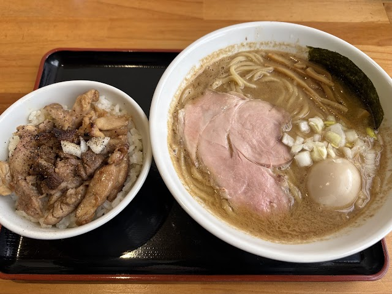
| 営業時間 | 月・木・金・土・日 11:30〜13:50 |
|---|---|
| 定休日 | 火・水曜 |
| 住所 | 富山県富山市中島１丁目４−３６ |
| 予約 | 要確認 — ☎ 090-8099-7887 ／ 公式サイト |
| 営業時間 | 月・火・水・木 17:00〜23:00 ／ 金・土 17:00〜0:00 |
|---|---|
| 定休日 | 日曜 |
| 住所 | 富山県富山市桜町２丁目６−１２ |
| 予約 | 可 — ☎ 076-433-8100 ／ 公式サイト |
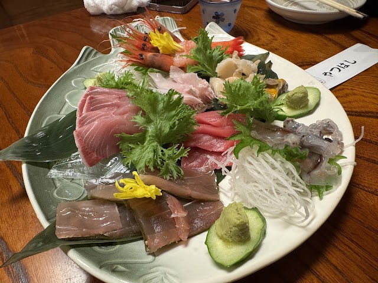
| 営業時間 | 月・火・水・木・金・土 17:30〜22:00 |
|---|---|
| 定休日 | 日曜 |
| 住所 | 富山県富山市桜木町６−４ |
| 予約 | 可 — ☎ 076-431-8284 ／ 公式サイト |
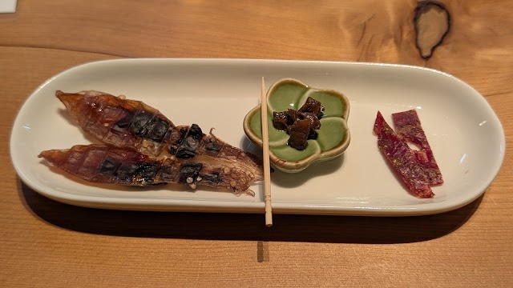
| 営業時間 | 月・水・木・金・土・日 10:00〜18:00 |
|---|---|
| 定休日 | 火曜 |
| 住所 | 富山県富山市東岩瀬町９３ |
| 予約 | 要確認 — ☎ 080-2962-6683 ／ 公式サイト |
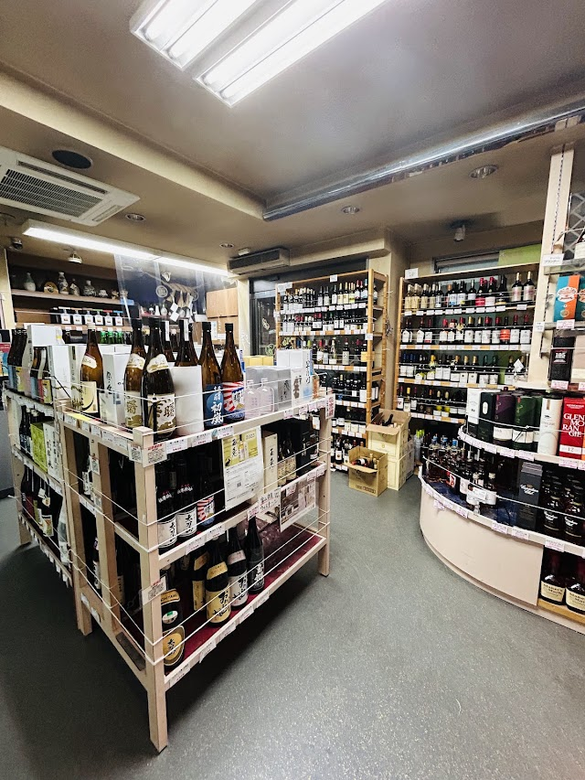
| 営業時間 | 月・火・水・木・金・土 9:00〜20:00 |
|---|---|
| 定休日 | 日曜 |
| 住所 | 富山県富山市新富町２丁目４−５ |
| 予約 | 要確認 — ☎ 076-432-4712 ／ 公式サイト |
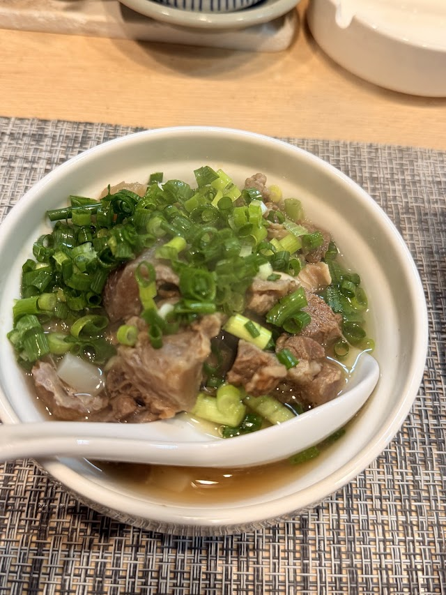
| 営業時間 | 月・火・水・木・金・土 17:00〜22:30 |
|---|---|
| 定休日 | 日曜 |
| 住所 | 富山県富山市一番町６−５ |
| 予約 | 可 — ☎ 076-423-0677 |
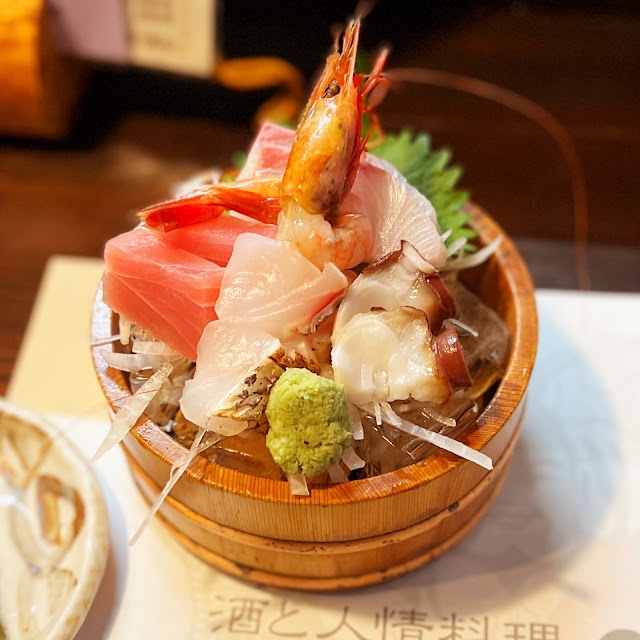
| 営業時間 | 月・火・水・木・金・土 17:30〜0:00 |
|---|---|
| 定休日 | 日曜 |
| 住所 | 富山県富山市新富町２丁目５−１ はまのやビル １階 |
| 予約 | 可 — ☎ 076-431-0122 ／ 公式サイト |
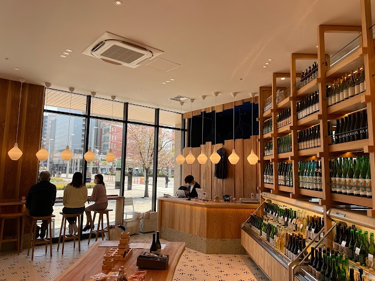
| 営業時間 | 月・火・水・木 10:00〜20:00 ／ 金・土・日 10:00〜22:00 |
|---|---|
| 定休日 | なし(要最終確認) |
| 住所 | 富山県富山市明輪町１−１−２３１ MAROOT１F |
| 予約 | 可 — ☎ 076-482-4799 ／ 公式サイト |
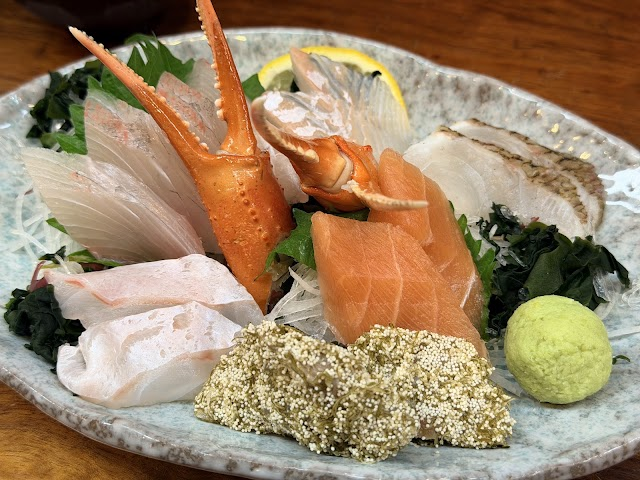
| 営業時間 | 月・火・水・木・金・土 17:00〜23:00 |
|---|---|
| 定休日 | 日曜 |
| 住所 | 富山県富山市桜町２丁目２−２２ |
| 予約 | 可 — ☎ 076-441-9369 ／ 公式サイト |
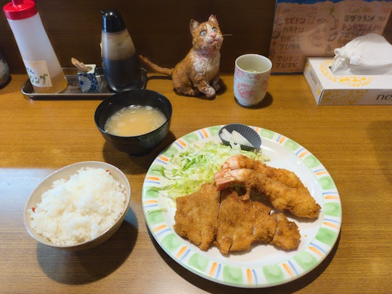
| 営業時間 | 月・火・水・木・金・土 11:30〜14:00, 17:30〜20:00 |
|---|---|
| 定休日 | 日曜 |
| 住所 | 富山県富山市桜町２丁目４−１５ 大井山ビル |
| 予約 | 要確認 — ☎ 076-432-3503 |
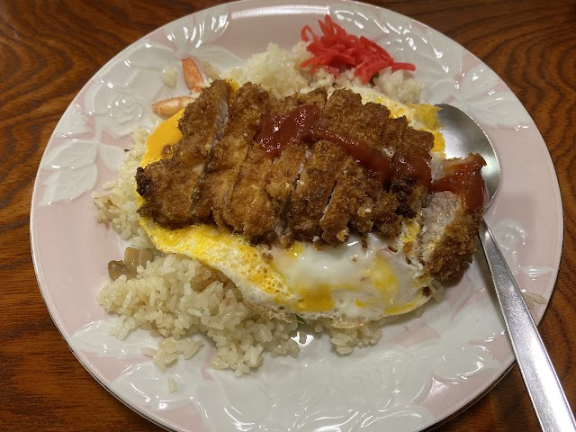
| 営業時間 | 月・火・木・金・日 11:30〜13:15 |
|---|---|
| 定休日 | 水・土曜 |
| 住所 | 富山県富山市東田地方町１丁目４−１７ |
| 予約 | 要確認 — ☎ 076-441-7872 ／ 公式サイト |
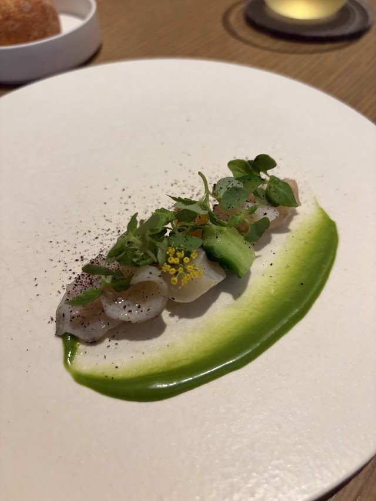
| 営業時間 | 月・火・水・木・金・日 18:00〜22:00 ／ 土 12:00〜15:00, 18:00〜22:00 |
|---|---|
| 定休日 | なし(要最終確認) |
| 住所 | 富山県富山市神通本町１丁目５−１８ |
| 予約 | 可 — ☎ 076-482-6091 ／ 公式サイト |
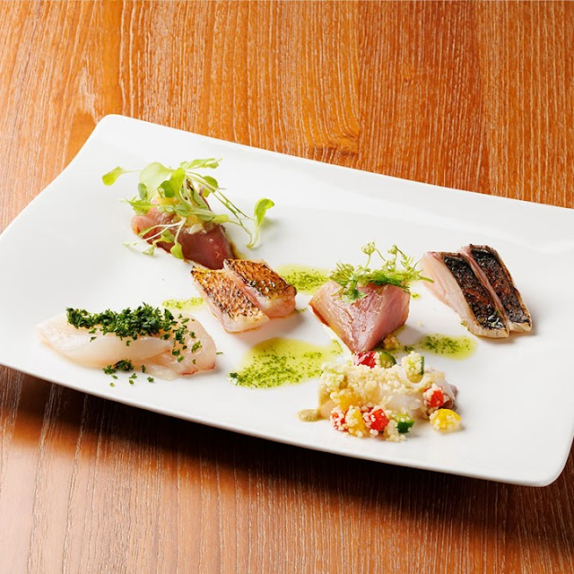
| 営業時間 | 火・水・木・金・土・日 11:30〜16:00, 18:00〜23:00 |
|---|---|
| 定休日 | 月曜 |
| 住所 | 富山県富山市東岩瀬町９３ |
| 予約 | 可 — ☎ 076-482-4014 ／ 公式サイト |
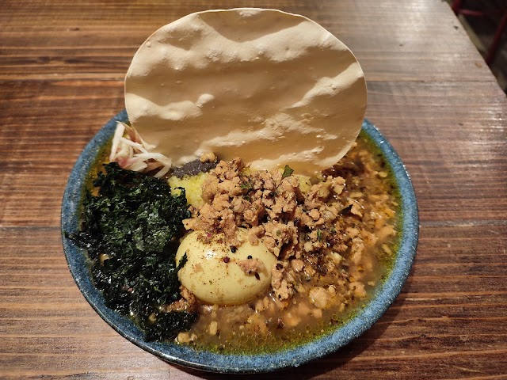
| 営業時間 | 月・土・日 11:00〜16:00 |
|---|---|
| 定休日 | 火・水・木・金曜 |
| 住所 | 富山県富山市西町６−４ 西町河上ビル 1F-A |
| 予約 | 要確認 — ☎ 076-491-2184 ／ 公式サイト |
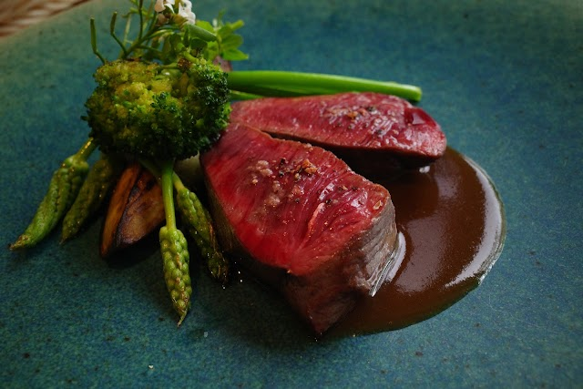
| 営業時間 | 火・水・木・土・日 11:30〜14:00, 18:00〜22:00 ／ 金 18:00〜22:00 |
|---|---|
| 定休日 | 月曜 |
| 住所 | 富山県富山市小島町２−２ リバーサイド小島 １階 |
| 予約 | 可 — ☎ 076-411-5061 ／ 公式サイト |
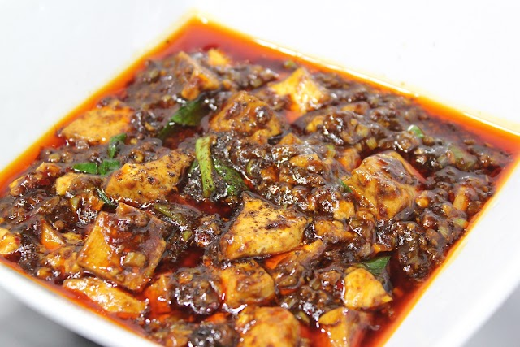
| 営業時間 | 月・火・水・木・金・土 11:30〜23:00 |
|---|---|
| 定休日 | 日曜 |
| 住所 | 富山県富山市牛島町１８−７ アーバンプレイス B1F |
| 予約 | 可 — ☎ 076-441-7905 ／ 公式サイト |
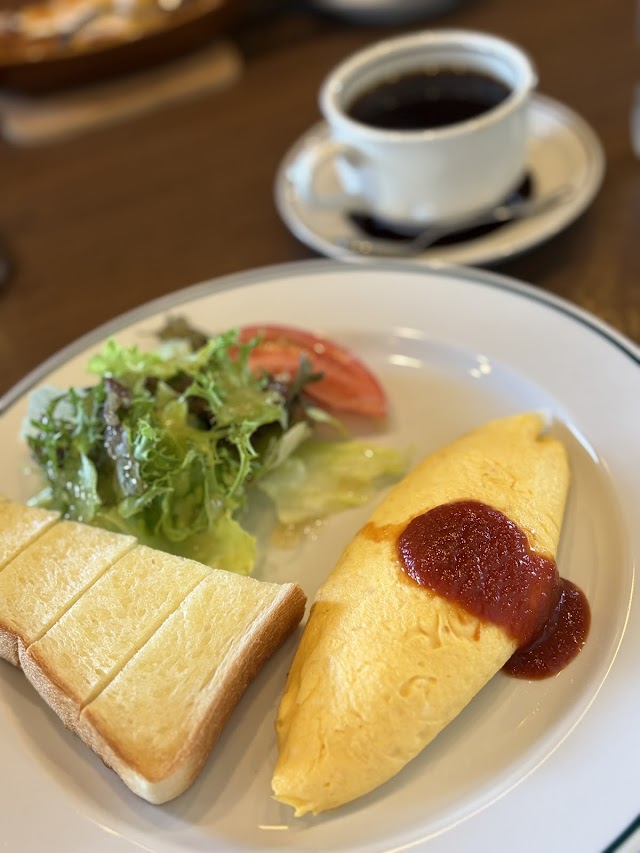
| 営業時間 | 月・木・金 7:00〜15:00 ／ 土・日 7:00〜17:00 |
|---|---|
| 定休日 | 火・水曜 |
| 住所 | 富山県富山市堤町通り１丁目４−１ セントラルコート西町プレミア |
| 予約 | 要確認 — ☎ 076-424-4896 ／ 公式サイト |
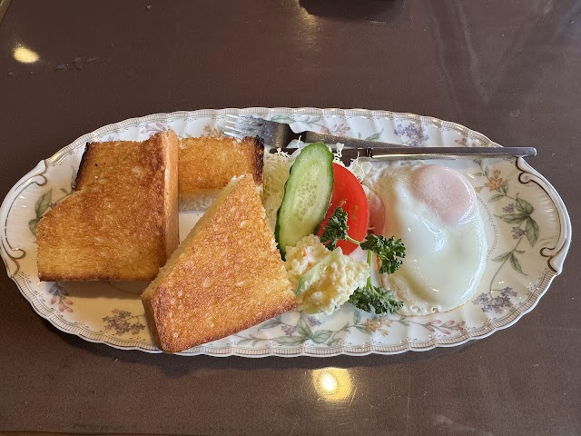
| 営業時間 | 月・水・木・金・土 8:00〜19:00 ／ 日 8:00〜17:00 |
|---|---|
| 定休日 | 火曜 |
| 住所 | 富山県富山市総曲輪２丁目１−５ |
| 予約 | 要確認 — ☎ 076-421-3433 |
| 営業時間 | 月・火・水・木・金・土・日 9:00〜17:00 |
|---|---|
| 定休日 | なし(要最終確認) |
| 住所 | 富山県富山市古沢１１１番地２ |
| 予約 | 要確認 — 公式サイト |
| 営業時間 | 月・火・水・木・金・土 9:00〜18:00 |
|---|---|
| 定休日 | 日曜 |
| 住所 | 富山県富山市上本町８−６ 福一ビル西町 |
| 予約 | 要確認 — ☎ 076-421-2398 ／ 公式サイト |
| 営業時間 | 月・火・木・金・土・日 8:00〜17:00 |
|---|---|
| 定休日 | 水曜 |
| 住所 | 富山県富山市西町６−３ 鈴木亭 |
| 予約 | 要確認 — ☎ 076-421-4972 ／ 公式サイト |
| 営業時間 | 月・火・木・金・土・日 10:00〜18:00 |
|---|---|
| 定休日 | 水曜 |
| 住所 | 富山県富山市古鍛冶町６−７ |
| 予約 | 要確認 — ☎ 076-425-5104 ／ 公式サイト |
| 営業時間 | 水・木・金・土 8:00〜16:00 |
|---|---|
| 定休日 | 月・火・日曜 |
| 住所 | 富山県富山市呉羽町１８１８−１５ |
| 予約 | 要確認 — ☎ 076-434-8405 ／ 公式サイト |
本ガイドは個人利用目的で作成。掲載情報は2026年8月時点の調査に基づく。写真出典: Google Maps投稿写真(©各投稿者/Google)。